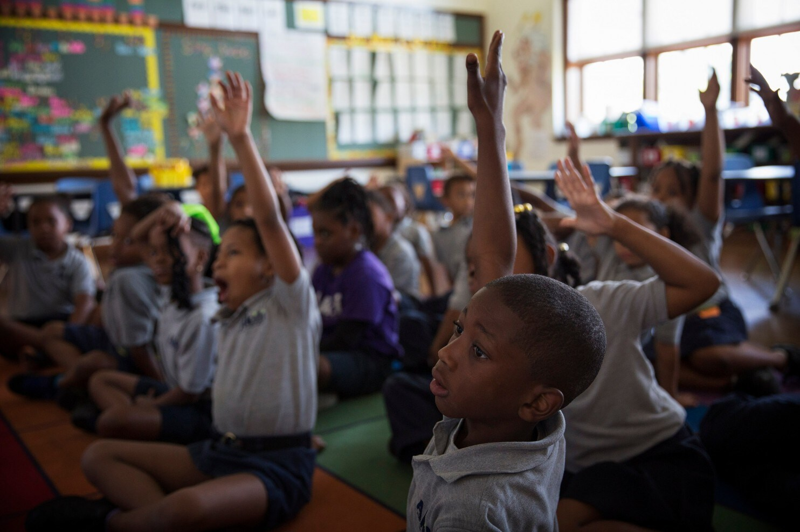

How can we help poor countries in education
- Reduce the Cost of Education.
- Abolishment of school fees.
- School Lunch Programs. It's been proven that malnourished children learn poorly.
- Educating Parents.
- A New Educational Model.
- Improved Resources for Teachers.
Take Action

WHY TEACHER SUPPORT?
We stand behind the belief that students will perform better if classrooms are led by enthusiastic, inspired and well-trained teachers.
To ensure students are receiving a high-quality education, we provide public primary school teachers with training and innovative resources, enhancing the delivery of national curriculum and empowering them to lead dynamic and effective lessons.
TEACHER'S RESPONSIBILITIES
A critical component to a successful educational experience is the facilitation of learning in a welcoming and encouraging environment.Quality Education integrates Social and Emotional Learning (SEL) into the core of our Teacher Support program, as our ethos is centered around encouraging learning environments where primary students can thrive and be set up with skills to succeed.

WHY INFRASTRUCTURE?